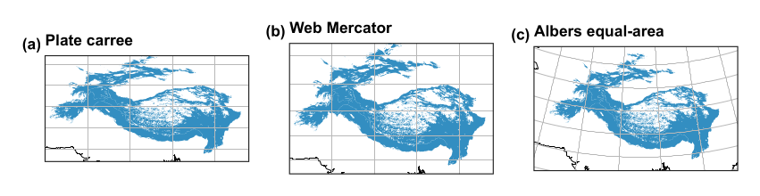
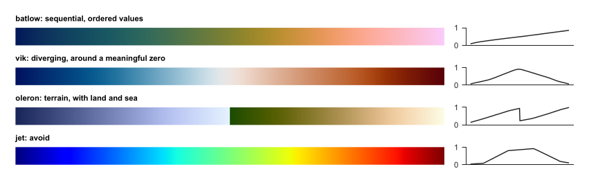
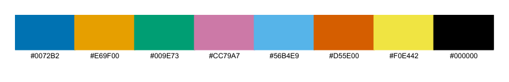

The whole guide on one page¶
1. What a map is made of¶
A publishable map answers three questions at a glance: what is shown, where it is, and whether it can be trusted. Each part below serves one of these. Figure 1.1 has them all, and later chapters show the code for each.

Figure 1.1. A complete map. Its code is in src/make_figures.py, function anatomy().
| Part | What it does | In code |
|---|---|---|
| Map frame | Holds the data, and its border is called the neatline | map_axes() |
| Thematic layer | The subject itself: polygons, points or a raster | add_geometries(), imshow() |
| Base layer | Quiet land and sea that give context without competing | map_axes(land=True) |
| Graticule | Lines of latitude and longitude, with labels, that show location and projection | map_axes(grid=True) |
| Scale bar | Turns map distance into ground distance | scale_bar() |
| Legend | Explains colours and symbols | ax.legend() |
| Locator inset | A small overview showing where the map sits | locator() |
| Title or caption | States the subject; journals usually want it in the caption | set_title(), LaTeX |
| Credit | Names sources, as licences often require | credit() |
| Projection note | Lets a reader judge distortion | Caption, finish_map() |
| Record | A file stating sources and projection, for repeating the work | finish_map() |
# North arrows.¶
We usually leave them out. On a conic projection, north differs across the map, so a single arrow is wrong in most places, and the graticule already shows direction. Use an arrow only on a large-scale map with no graticule.
# Hierarchy.¶
The eye should reach the data first and the furniture last. So base layers are pale, grid lines thin and grey, and text small. If your scale bar is what stands out, it is too heavy.

The same data with defaults (a), and with the house style (b). Panel (a) distorts shape and hides the data behind its grid.
2. The tools, and how they fit together¶
| Tool | Its job |
|---|---|
| Matplotlib | Draws everything. A figure is the page, and an axes is one plot on it |
| Cartopy | Adds map projections to Matplotlib; an axes with a projection is a GeoAxes |
| GeoPandas | Reads and reprojects vector data such as GeoJSON |
| rasterio | Reads and reprojects rasters such as GeoTIFF |
| NumPy | Holds raster values as arrays |
| matplotlib-scalebar | Draws the scale bar |
| cmcrameri | Scientific colour maps, from Crameri et al. (2020) |
| Earth Engine | Computes on satellite archives, in the cloud |
| research-helpers | Our layer: carto sets the house style and checks each map |
| LaTeX | Places the finished map in a paper or book |
2.1 Two ideas that prevent most mistakes¶
# Figure size is set in inches, in journal widths.¶
Fonts are in points, so a figure drawn at its printed width keeps its text at the true size. If you draw a figure large and shrink it, its text shrinks as well. From the code: research_helpers/carto.py, size(), lines 45--47
def size(width="double", ratio=0.62):
w = WIDTH.get(width, width)
return w, w * ratio
# transform says what your data is in, and projection what the map is in.¶
This is the most common source of confusion. The map’s projection is set once. Each thing you draw says which coordinates it uses:
ax = plt.axes(projection=carto.albers(85, 25, 45)) # the map
ax.plot(lon, lat, transform=ccrs.PlateCarree()) # data in degrees
ax.imshow(a, extent=box, transform=ccrs.UTM(42)) # data in UTM metres
PlateCarree here means “plain longitude and latitude”. If you leave out transform, Cartopy assumes that the numbers are already in the map’s projection, and your data lands in the wrong place or disappears.
2.2 The house style¶
use_style() runs once at the top of a script. It sets fonts, line widths and export settings, so all figures in a project match. From the code: research_helpers/carto.py, use_style(), lines 33--42
def use_style():
"""Set fonts, weights and export options once, so every figure in a project matches."""
mpl.rcParams.update({
"font.family": "sans-serif", "font.sans-serif": ["Source Sans 3", "Source Sans Pro", "Arial", "DejaVu Sans"], "font.size": 8,
"axes.titlesize": 9, "axes.titleweight": "bold", "axes.titlelocation": "left", "axes.labelsize": 8,
"axes.spines.top": False, "axes.spines.right": False, "axes.linewidth": 0.6, "axes.edgecolor": INK, "axes.labelcolor": INK,
"xtick.color": INK, "ytick.color": INK, "xtick.labelsize": 7, "ytick.labelsize": 7, "xtick.major.width": 0.6, "ytick.major.width": 0.6,
"legend.frameon": False, "legend.fontsize": 7, "lines.linewidth": 1.1, "figure.dpi": 150, "savefig.dpi": 400, "savefig.bbox": "tight",
"pdf.fonttype": 42, "ps.fonttype": 42, "svg.fonttype": "none", "axes.prop_cycle": mpl.cycler(color=QUALITATIVE),
})
Three of its settings deserve a note. pdf.fonttype=42 embeds real text, which journals ask for and which stays editable. savefig.dpi=400 is above the common 300 dpi print requirement. savefig.bbox="tight" trims empty margins, so check the final size.
2.3 A minimal script¶
from research_helpers import carto
import cartopy.crs as ccrs, geopandas as gpd
carto.use_style() # 1 style
g = gpd.read_file("regions.geojson") # 2 data
proj = carto.albers(85, 25, 45) # 3 projection
fig, ax = carto.map_axes(proj, [60, 108, 22, 47]) # 4 frame, land, grid
ax.add_geometries(g.geometry, ccrs.PlateCarree(), # 5 subject
facecolor=carto.QUALITATIVE[0], edgecolor="white", linewidth=0.2)
carto.scale_bar(ax) # 6 scale
carto.finish_map(fig, "figures/map_regions", # 7 checks and saves
title="Regions", sources=["GMBA"], crs="Albers equal-area")
3. Choosing a projection¶
A flat map cannot keep every property of the globe. It can keep areas (equal-area), local shapes (conformal), or distances along some lines, but not all at once. Choose by what your map is used for.

The same region in three projections.
| Your map | Good choice | Code |
|---|---|---|
| Region at mid latitudes | Albers equal-area conic, with parallels at about a sixth and five-sixths of the height | carto.albers(lon, lat1, lat2) |
| A city or small area | The national grid or a UTM zone | ccrs.OSGB(), ccrs.UTM(42) |
| The world | Equal Earth, which keeps area | ccrs.EqualEarth() |
| Web tiles | Web Mercator, for navigation only | ccrs.Mercator.GOOGLE |
3.1 Never measure area in degrees¶
A degree of longitude shrinks towards the poles, so any area taken from degrees is wrong. Table 3.1 shows how far out each approach is, compared with Equal Earth, using the shared-geodata regions.
| How area is computed | Karakoram (km\(^2\)) | Error | Tian Shan (km\(^2\)) | Error |
|---|---|---|---|---|
| Geographic degrees treated as flat, at the equator’s scale | 91,702 | +23% | 756,672 | +35% |
| Web Mercator | 112,467 | +51% | 1,022,497 | +83% |
| Albers equal-area (ours) | 74,614 | +0% | 560,184 | +0% |
| Equal Earth | 74,614 | +0% | 560,184 | +0% |
Table 3.1. Area of two ranges by four routes.
Web Mercator inflates area most at high latitudes, which is why it should never be used for measuring. The routine is to reproject, and then measure:
km2 = g.to_crs("ESRI:54034").area / 1e6 # cylindrical equal-area, in square metres
3.2 Our helper¶
From the code: research_helpers/carto.py, albers(), lines 50--53
def albers(central_lon, parallel_1, parallel_2, central_lat=None):
"""Equal-area conic, the usual choice for mid-latitude regions wider than they are tall."""
lat = (parallel_1 + parallel_2) / 2 if central_lat is None else central_lat
return ccrs.AlbersEqualArea(central_longitude=central_lon, central_latitude=lat, standard_parallels=(parallel_1, parallel_2))
3.3 Scale bars and distortion¶
A scale bar is only exactly true where a projection has no distortion: along the standard parallels of a conic map. On a small map of a large region, say this in the caption. On a world map, leave the bar out, since no single scale holds. finish_map() accepts a sentence explaining why a map has no bar.
4. Colour¶
4.1 Match the colour map to the data¶
| Data | Colour map | Name in carto |
|---|---|---|
| Ordered values, such as snow days | Sequential: one steady change in lightness | SEQUENTIAL (batlow) |
| Values around a meaningful zero, such as anomalies | Diverging: two hues meeting at a neutral colour | DIVERGING (vik) |
| Categories, such as land cover | Qualitative: distinct colours | QUALITATIVE (Okabe-Ito) |

Colour maps (left) with their lightness (right). Batlow rises fairly steadily. Jet rises and falls, creating false edges in smooth data, and fails for many colour-blind readers.

The qualitative palette, chosen to stay distinct for common colour-vision deficiencies.
4.2 Rules¶
-
Centre a diverging map on the meaningful value, with
vmin=-lim, vmax=lim. -
Fix limits across panels you want compared. Otherwise, the same colour means different values.
-
Stretch by percentiles for display, and say so, because a few bright pixels would otherwise wash out the rest:
lo, hi = np.nanpercentile(a, [2, 98]) -
Never let colour alone carry meaning: add labels or hatching where you can.
-
Print or view in greyscale once, to test the map.
4.3 Over imagery¶
Satellite images are busy, so plain labels get lost. outlined() adds a dark edge to text, and mark() draws numbered white circles, which read on any background. Explain the numbers in the caption or a table. This also suits print, since long place names no longer cover the data. From the code: research_helpers/carto.py, mark(), lines 102--107
def mark(ax, points, transform=None, size=7):
"""Numbered markers with a halo, readable over any image. points is a list of (number, x, y); a caption or key explains them."""
transform = transform or ccrs.PlateCarree()
for n, x, y in points:
ax.text(x, y, str(n), transform=transform, ha="center", va="center", fontsize=size, fontweight="bold", color="black", zorder=20,
bbox=dict(boxstyle="circle,pad=0.25", facecolor="white", edgecolor="black", linewidth=0.5))
From the code: research_helpers/carto.py, outlined(), lines 110--112
def outlined(ax, x, y, text, transform=None, size=7, color="white"):
"""A place label with an outline, for use over imagery."""
return ax.text(x, y, text, transform=transform or ccrs.PlateCarree(), fontsize=size, color=color, zorder=19, path_effects=[pe.withStroke(linewidth=1.8, foreground="black")])
5. Each component, with its parameters¶
5.1 The frame: map_axes()¶
From the code: research_helpers/carto.py, map_axes(), lines 56--71
def map_axes(projection, extent=None, width="double", ratio=0.62, ax=None, grid=True, land=True, step=(10, 10)):
"""A map with quiet land, sea and graticule. Extent is lon0, lon1, lat0, lat1 in degrees."""
fig = None
if ax is None:
fig, ax = plt.subplots(figsize=size(width, ratio), subplot_kw={"projection": projection})
if extent:
ax.set_extent(extent, ccrs.PlateCarree())
if land:
ax.add_feature(cfeature.LAND.with_scale("50m"), facecolor=MUTED_LAND, edgecolor="none", zorder=0)
ax.add_feature(cfeature.OCEAN.with_scale("50m"), facecolor=MUTED_WATER, edgecolor="none", zorder=0)
if grid:
g = ax.gridlines(draw_labels=True, x_inline=False, y_inline=False, linewidth=0.3, color=GRID, xlocs=mpl.ticker.MultipleLocator(step[0]), ylocs=mpl.ticker.MultipleLocator(step[1]))
g.top_labels = g.right_labels = False
g.xlabel_style = g.ylabel_style = {"size": 6.5, "color": INK}
ax.spines["geo"].set_linewidth(0.5)
return (fig, ax) if fig else ax
| Parameter | Meaning |
|---|---|
projection |
The map’s projection |
extent |
[lon0, lon1, lat0, lat1] in degrees, or None to set it later |
width |
"single", "onehalf" or "double" column, or inches |
ratio |
Height as a share of width |
ax |
Draw on an existing panel, for multi-panel figures. Nothing new is created |
grid, land |
Turn the graticule or base layer off, as you may want over imagery |
step |
Graticule spacing in degrees |
5.2 The scale bar: scale_bar()¶
From the code: research_helpers/carto.py, scale_bar(), lines 74--78
def scale_bar(ax, location="lower left"):
"""Scale bar in metres of the map's projection. It is true along the standard parallels only; say so in the caption."""
bar = ScaleBar(1, "m", location=location, frameon=True, box_color="white", box_alpha=0.8, font_properties={"size": 6.5}, length_fraction=0.18, width_fraction=0.008, color=INK, scale_loc="top")
ax.add_artist(bar)
return bar
Pass location as "lower left", "upper right" and so on, and place it where data is absent. The white box keeps it readable over imagery. It reads in metres of the map’s projection, so on a geographic axis, with units of degrees, it would be wrong: use a projected axes.
5.3 The inset: locator()¶
From the code: research_helpers/carto.py, locator(), lines 115--124
def locator(fig, position, extent, box, projection=None):
"""Small overview map. position is [left, bottom, width, height] in figure units; box is the lon0, lon1, lat0, lat1 of the main map."""
a = fig.add_axes(position, projection=projection or ccrs.PlateCarree())
a.set_extent(extent, ccrs.PlateCarree())
a.add_feature(cfeature.LAND.with_scale("50m"), facecolor=MUTED_LAND, edgecolor="#666666", linewidth=0.3)
a.add_feature(cfeature.OCEAN.with_scale("50m"), facecolor=MUTED_WATER)
a.add_feature(cfeature.BORDERS.with_scale("50m"), edgecolor="#888888", linewidth=0.3)
x0, x1, y0, y1 = box
a.plot([x0, x1, x1, x0, x0], [y0, y0, y1, y1, y0], color="#D55E00", linewidth=0.9, transform=ccrs.PlateCarree())
return a
| Parameter | Meaning |
|---|---|
position |
[left, bottom, width, height] as shares of the figure, from 0 to 1 |
extent |
The wider area the inset shows |
box |
The main map’s limits, drawn as an orange box |
projection |
Defaults to plain latitude and longitude |
Place it over empty or unimportant ground, and always look at the result. Our first flood map hid a marked town under its inset, and a later version hid the axis labels. Positions are in figure units, so moving an inset can take a few tries.
5.4 Other parts¶
From the code: research_helpers/carto.py, credit(), lines 127--128
def credit(fig, text, y=0.005):
fig.text(0.995, y, text, ha="right", va="bottom", fontsize=5.5, color="#444444")
From the code: research_helpers/carto.py, panel_labels(), lines 81--83
def panel_labels(axes, x=-0.02, y=1.03):
for i, ax in enumerate(axes):
ax.text(x, y, f"({chr(97 + i)})", transform=ax.transAxes, fontweight="bold", fontsize=9, va="bottom", ha="right")
5.5 Legends¶
Cartopy polygons do not always appear in legends automatically, so make the handles yourself. For long legends, put them below the map, so that they do not cover data:
handles = [plt.Rectangle((0, 0), 1, 1, color=c) for c in colours]
ax.legend(handles, names, loc="upper center", bbox_to_anchor=(0.5, -0.1), ncol=3)
5.6 Rasters¶
For a raster in another projection, warp it first, and then draw it. This gives you control over resampling, and avoids blurry or blocky results. Use nearest neighbour for classes, which must not be averaged, and bilinear for continuous data.
transform, w, h = calculate_default_transform(src.crs, target, src.width, src.height, *src.bounds, resolution=1000)
out = np.full((h, w), 255, dtype="uint8")
reproject(src.read(1), out, src_transform=src.transform, src_crs=src.crs,
dst_transform=transform, dst_crs=target, resampling=Resampling.nearest)
ax.imshow(out, extent=box, origin="upper", transform=ax.projection, interpolation="nearest")
Mind nodata. Our snow map once lost a whole class, because 0 was both a class and the file’s nodata value. Reserve a value such as 255, and treat it explicitly.
6. From script to publication¶
6.1 One way out: finish_map()¶
Every map leaves through this function, which refuses a map without its sources or projection, or without a scale bar or a reason for having none. It saves three formats and a record. From the code: research_helpers/carto.py, finish_map(), lines 131--145
def finish_map(fig, stem, *, title, sources, crs, scale_bar=True, boundary_note=False, status="final", note="", formats=("pdf", "png", "svg")):
"""The one exit for a map: it stops if basic elements are missing, and saves a record beside the map.
A map must name its sources and projection and either carry a scale bar or say why not. The record makes it findable and repeatable.
"""
if not sources:
raise ValueError("a map must name its sources")
if not crs:
raise ValueError("a map must state its projection")
if scale_bar is not True and not isinstance(scale_bar, str):
raise ValueError("a map needs a scale bar, or a sentence saying why not")
s = save(fig, stem, formats, {"Title": title})
record = dict(title=title, sources=list(sources), crs=crs, scale_bar=scale_bar, boundary_note=BOUNDARY_NOTE if boundary_note else "", status=status, note=note, files=[s.with_suffix(f".{f}").name for f in formats])
s.with_suffix(".map.json").write_text(json.dumps(record, indent=1), encoding="utf8")
return s
From the code: research_helpers/carto.py, save(), lines 86--99
def save(fig, stem, formats=("pdf", "png", "svg"), meta=None):
"""Save vector and raster copies, without a timestamp so that a rebuild of the same figure is byte-stable where possible."""
stem = Path(stem)
stem.parent.mkdir(parents=True, exist_ok=True)
for f in formats:
md = {"Title": stem.name, **(meta or {})}
if f == "pdf":
md["CreationDate"] = None
elif f == "svg":
md["Date"] = None
elif f == "png":
md = {"Title": stem.name}
fig.savefig(stem.with_suffix(f".{f}"), metadata=md)
return stem
| Format | Use |
|---|---|
| LaTeX and print; a vector, except for rasters within it | |
| PNG | The web and slides, at 400 dpi |
| SVG | Later editing, with text kept as text |
.map.json |
The record: title, sources, projection, status |
6.2 Repeating a map¶
-
One script draws one family of figures, and takes no manual steps.
-
Data comes from named files or Earth Engine calls. Raw data is never edited.
-
Downloads are cached, so a rerun does not depend on the network, and the file records what was used.
-
Numbers in the text come from the same run, through
research_helpers.autotex. -
Every Earth Engine job also has a
.jsscript inearth-engine-code. -
Figures carry the name of what they show, such as
map_sindh_flood_2022.
6.3 Loops for many maps¶
When maps differ only in their data, write one function and loop. Fixing the colour limits keeps them comparable.
def range_map(unit, values, limits):
fig, ax = carto.map_axes(PROJ, EXTENT, width="single")
g[g.unit == unit].plot(ax=ax, column=values, vmin=limits[0], vmax=limits[1],
cmap=carto.SEQUENTIAL, transform=ccrs.PlateCarree())
carto.scale_bar(ax)
carto.finish_map(fig, F / f"map_{unit.lower().replace(' ', '_')}", title=unit,
sources=["GMBA"], crs="Albers equal-area")
plt.close(fig) # free memory, or a long loop runs out
for unit in g.unit.unique():
range_map(unit, "duration", (0, 250))
6.4 Checklist¶
-
Is the projection right for the use, and is it stated?
-
Is area measured in an equal-area projection?
-
Are sources credited as their licences require?
-
Does nothing cover the data: inset, legend or markers?
-
Do the markers sit on what they claim? Check against the numbers.
-
Are colours readable in greyscale and for colour-blind readers?
-
Is text at least about 6 pt at printed size?
-
Do disputed boundaries carry a note?
-
Have you actually looked at the final file?
The last matters most. In making the maps in these projects, the code ran without error while markers missed their targets, polygons failed to draw, and a class vanished. Only looking caught them.
6.5 Different fields¶
Journals set their own limits: column width, formats, fonts, resolution. Set those through size() and the export options, and check the author guide. Journal requirements take priority over this manual. Elevation, geological and nautical maps also have their own conventions, such as standard symbols and colours, and these apply when you make such maps.